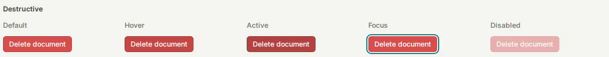
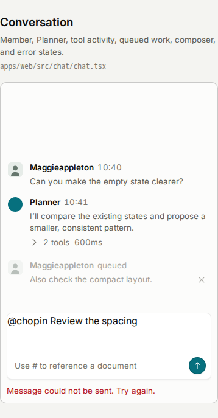
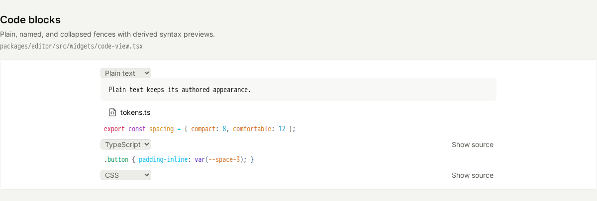
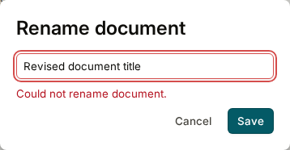
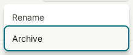
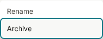
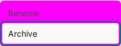

What did I actually ask the browser to do?
The tests use a dedicated example page built mostly from the same components as Chopin. This lets us examine particular states, such as an open menu or a failed save, without logging in or creating a real document.
| Question | What the test does | Result |
|---|---|---|
| Has the appearance changed? | Takes pictures of text, status labels, buttons, fields, conversation, note boxes, code and tables, plus open menus and pop-up windows. Later runs compare new pictures with the reviewed references and flag differences for inspection. | All 32 reference pictures have been refreshed from the current interface; changed pictures were visually reviewed. GitHub will compare against these saved references. |
| Are there common accessibility problems? | Checks each pictured state for problems such as text that is too faint against its background, controls without a name that assistive software can announce, and misleading structural labels. | Approved contrast shortfalls remain visible in the results. The revised checks passed, including tests proving that unexpected findings still fail. |
| Can you use the controls without a mouse? | Opens the document menu, moves between options with arrow keys, opens the rename window, moves between its controls with Tab and closes it with Escape. Checks that the button that opened it becomes the active keyboard control again. Also chooses an item in a dropdown. | These keyboard sequences passed at both widths. |
| Do empty and failed saves behave as expected? | Clears the title to check that Save becomes unavailable, then simulates a failed rename to check that an error appears and the field is marked as having a problem. | Both states behaved as expected. This tests the local example, not an actual server save. |
| Can content still be read when space is limited? | Doubles the page’s base text size and checks that selected fields, note boxes and document-action controls fit their containers. Separately checks that a wide table and narrow code preview can scroll using the keyboard. | Those checks passed. Wide code and tables deliberately scroll sideways; showing only part of them at once is expected. |
| Does the reduced-motion preference work? | Enables the browser preference for less motion, then opens the menu and rename window and checks that their transitions are effectively immediate. | The tested controls respected that preference. |
What the numbers mean: the same 19 test cases run at two widths, giving 38 checks. Eight further checks deliberately introduce mistakes to prove the colour exceptions do not hide them, bringing the total to 46. The interface checks produce 16 reference pictures at each width, giving 32 pictures. These are counts of test cases and pictures, not counts of screens covered or bugs found.
What needed repair, and what was a design choice
| Problem found | Why it matters | What changed |
|---|---|---|
| Some colours fell below the automated contrast target | Labels on red action buttons, conversation timestamps and queued messages, and several colours in code previews did not meet the contrast check. That can make them harder to read. | The original colours and quieter secondary text are restored, as you requested. Their contrast warnings remain recorded as deliberate design choices. The tests still reject new or changed findings; they do not treat all faint text as acceptable. |
| Code previews needed keyboard access | A narrow code block can contain text beyond the right-hand edge. A keyboard user needs to be able to reach the preview and scroll it. | The preview can become the active keyboard control, shows a visible outline, and passed the narrow-width scrolling check. |
| Some accessibility labels were misleading | The example page described several static illustrations as active pop-up windows. An initial code-preview fix also labelled several code boxes as major page regions with identical names. | Those labels were corrected so they describe the elements accurately. Neither finding was left as an ignored test failure. |
The keyboard, focus, scrolling and layout repairs remain. The colour restoration is coordinated with the separate interface-repair work. The report will distinguish accepted contrast tradeoffs from unexpected test failures.


We also found problems in the tests themselves. An early narrow screenshot cut off part of a button example, and content still loading above a table moved it during capture. I split oversized examples into smaller pictures and made the browser wait for content to finish loading. Those were capture problems, not evidence that the app’s table was broken.
What we learned: looking at the rendered interface revealed readability and keyboard problems that source-code checks alone had not settled. But the test setup also needs scrutiny: a bad screenshot can create a misleading result.
Examples of what was inspected
These pictures show the states covered by the tests, not before-and-after comparisons. The conversation and code pictures now show the restored colours. All 46 local browser checks passed after the restoration.








Can the tests actually catch mistakes?
A test that always passes is not useful. To check that these tests could catch a problem, I temporarily changed a menu’s colour and removed the name from a menu action.


The missing action name also caused the accessibility check to fail. Both deliberate defects were then removed. This shows that the checks caught those two specific mistakes; it does not prove they will catch every possible design or accessibility problem.
After adding the colour exceptions, I ran four more deliberate mistakes at each width: faint new primary text, a changed code colour, an approved finding disappearing, and an unnamed button. All eight were rejected as intended. These checks are now part of the regular suite, so preserving quiet secondary text does not mean accepting any new problem.
What have we achieved—and what remains?
Built: reusable browser checks for the selected examples, reviewed reference pictures, and a way to show a reviewer what changed when a test fails. The proposed change adds these checks to GitHub’s automatic checks on future code changes.
Run successfully: all 46 browser checks passed locally after the colour restoration. GitHub reruns them against the saved pictures and also runs the existing application tests. Open Latest checks for the current proposed change’s results.
Still awaiting integration: change #209 is open. Its proposed testing workflow is not yet part of the main branch through this change. It also needs to be combined with the related work and tested again after that combination.
- Coverage is selective. These examples do not cover every screen, state or user journey. Much of the page uses real components; the message composer and table-toolbar illustrations do not test real editing behaviour.
- A narrow browser window is not a phone test. The checks used one browser engine at desktop-like and phone-like widths. They do not establish compatibility with Safari, Firefox, touch interaction or actual mobile devices.
- Accessibility still needs human testing. No screen-reader user study or complete accessibility audit was performed. A clean automatic scan covers only the rules that tool can check in the states we showed it.
- Pictures cannot judge design quality. A comparison can flag changed spacing or colours. A person must decide whether a change is intentional, attractive and useful before accepting a new reference picture.
The practical gain: we now have a repeatable way to catch certain interface mistakes and make unexpected visual changes visible during review. We still need design judgement, broader coverage and human accessibility testing.
Technical evidence and next steps
Open implementation details, test results and source links
Recorded contrast: Delete labels 4.20:1; timestamps/tool details 4.43:1; queued text 2.21–2.64:1; measured code tokens 2.14–3.27:1; supplementary audit labels 4.12:1. The scan target is 4.5:1. Higher numbers mean a stronger difference between text and background. These are accepted shortfalls, not claims that the target is met. See the measured decision record and rejection tests.
The browser automation tool is Playwright; the automatic accessibility checker is axe. Screenshots are taken in a fixed Linux environment, with the same browser and fonts locally and on GitHub, to reduce differences caused by the testing machine.
Versions: Bun 1.4.2, Playwright 1.62.1, axe 4.13.0. Viewports: 1440 × 1000 and 390 × 844. The revised policy accepts only explicitly approved colour findings, including their measured colours, text size, markup and count. Other findings, changed measurements and stale exceptions fail. No screenshot masks are used. The text-enlargement test changes the base text size; it is not a full browser-zoom test.
The original 28 September GitHub run, before the colour decision, tested source plus
report commit faaa6563: 38 design checks passed in 2.6 minutes; their
full step, including setup, took 3 minutes 34 seconds. The 240 existing system tests
passed in 4.2 minutes. The separate validation and production-container jobs passed
too.
Locally, 1,658 unit tests passed, with two database-dependent suites skipped; database contract tests passed on GitHub. The production build check confirmed that this development-only example page is not bundled into the shipped app.
Review/integration note: the planned order is #207, #208, then #209. These changes share some fixes. After combining them, the reviewed source-file acknowledgement needs updating and the combined checks need another run. Passing each branch separately is not evidence that their combination passes.